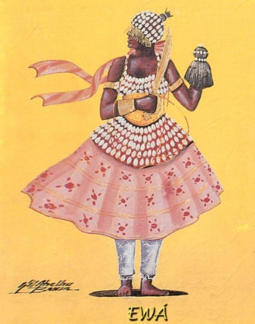

Ewá
Havia uma mulher que tinha dois filhos, aos quais amava mais do que tudo. Levando as crianças, ela ia todos os dias à floresta em busca de lenha, lenha que ela recolhia e vendia no mercado para sustentar os filhos. Ewá, seu nome era Ewá e esse era seu trabalho, ia ao bosque com seus filhos todo dia. Uma vez, os três estavam no bosque entretidos quando Ewá percebeu que se perdera. Por mais que procurasse se orientar, não pôde Ewá achar o caminho de volta. Mais e mais foram os três se embrenhando na floresta. As duas crianças começaram a reclamar de fome, de sede e de cansaço. Quanto mais andavam, maior era a sede, maior a fome. As crianças já não podiam andar e clamavam à mãe por água. Ewá procurava e não achava nenhuma fonte, nenhum riacho, nenhuma poça d'água. Os filhos já morriam de sede e Ewá se desesperava. Ewá implorou aos deuses, pediu a Olodumare. Ela deitou-se junto aos filhos moribundos e, ali onde se encontrava, Ewá transformou-se numa nascente d'água. Jorrou da fonte água cristalina e fresca e as crianças beberam dela. E a água matou a sede das crianças. E os filhos de Ewá sobreviveram. Mataram a sede com a água de Ewá. A fonte continuou jorrando e as águas se juntaram e formaram uma lagoa. A lagoa extravasou e as águas mais adiante originaram um novo rio. Era o rio Ewá, o Odô Ewá.
Ewá, filha de Obatalá e Nanã, vivia em seu castelo como se estivesse numaclausura. O amor de Obatalá por ela era muito estranho. A fama da beleza e da castidade da princesa chegou a todas as partes, inclusive ao reino de Sango. Mulherengo como era, Sango planejou como iria seduzir Ewá. Empregou-se como jardineiro no palácio de Obatalá. Um dia Ewá apareceu na janela e admirou-se de Sango. Nunca havia visto um homem como aquele. Não se tem notícia de como Ewá se entregou a Sango, no entanto, arrependida de seu ato, pediu ao pai que lhe enviasse a um lugar onde nenhum homem lhe enxergasse. Obatalá deu-lhe o reino dos mortos. Desde então é Ewáquem, no cemitério, entrega a Oiá os cadáveres que Obaluaiê conduz para que Orisá-Okô os coma.
Notícias...
----------------------------------
Copyright © 2011- Todos direitos reservados à ACCAIA
Rua Arildo Jose da Silva,99 - Itinga Joinville - SC - Cep: 89245000
::: Suporte 04791261971 :::